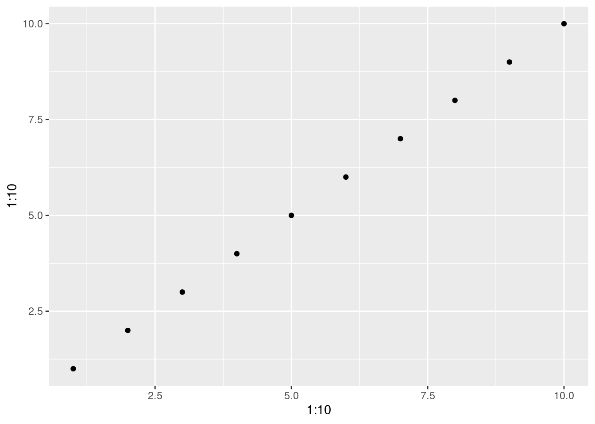

Chapitre 7 Installer et utiliser les librairies R
7.0.1 Package
Les packages (paquets pour être rigoureux) sont des regroupements de fonctions et de jeux de données partageant un thème similaire, e.g. statistiques, analyse spatiale, visualisation...
Tout le monde peut développer des packages et les rendre disponibles aux autres utilisateurs de R.
Les packages sont généralement disponibles via le Comprehensive R Archive Network (CRAN) http://cran.r-project.org/web/packages/.
Actuellement, plus de 18000 packages sont disponibles librement.
Pour installer des packages dans R, il suffit d’utiliser la fonction
install.packages() :
## Installing package into '/home/runner/work/_temp/Library'
## (as 'lib' is unspecified)## also installing the dependencies 'colorspace', 'farver', 'labeling', 'munsell', 'RColorBrewer', 'viridisLite', 'gtable', 'isoband', 'scales'Il est nécessaire d’installer un package une seule fois, même si des
mises à jours régulières sont recommandées. Cependant, pour utiliser une
fonction se trouvant au sein d’un package, il ne suffit pas de
simplement installer le package. Il faut également utiliser la fonction
library() à chaque début de session R pour “charger” le package.
Voici un exemple qui utilise la fonction qplot() du package
ggplot2 que l’on vient tout juste d’installer.
Le package a été installé correctement, mais il n’a pas été chargé. Par conséquent, l’exécution de ce code cause l’erreur suivante :
Error in qplot(1:10, 1:10) : could not find function "qplot"
Pour utiliser la fonction qplot(), il faut charger le package
ggplot2 avant d’appeler cette fonction.
La fonction peut maintenant être trouvée par R et l’exécution de cette fonction retourne le graphique suivant :

Il est de bon usage de décharger les packages une fois que l’on a fini
de les utiliser car ils pourraient entrer en conflit avec d’autres
packages. Le déchargement est effectué avec la fonction detach() et en
spécifiant qu’il s’agit d’un package:
7.1 Obtenir de l’aide
7.1.1 Recherche de fonctions
Nous avons vu jusqu’à maintenant que R est un outil très puissant et comporte de nombreuses fonctions. Parmi ces fonctions, il y en a probablement une qui vous permet d’effectuer une tâche que vous devez compléter.
Par contre, il n’est pas toujours facile de savoir quelle fonction utiliser pour une tâche précise. Comment trouver la bonne ?
Pour trouver une fonction pouvant réaliser une action spécifique, il
faut utiliser l’opérateur ?? ou la fonction help.search(). Pour
effectuer une recherche, tapez ?? suivi d’un terme relié à votre
recherche. Par exemple, supposons que l’on souhaite créer une séquence
de nombres pairs entre 0 et 10. On effectue une recherche avec le terme
sequence :
Cette commande ouvre la fenêtre suivante :
Note : les résultats d’une recherche dépendent des packages installés sur votre ordinateur.
Les résultats de la recherche comportent deux colonnes :
- À gauche, on retrouve les noms du package et de la fonction sous le
format :
nom_du_package::nom_de_la_fonction. - À droite, on retrouve la description des fonctions.
Généralement, les fonctions portent un nom qui est représentatif de ce qu’elles font. C’est plus facile de les trouver. Rappelez-vous de ceci si jamais vous décidez d’écrire vos propres fonctions !
Dans le cas présent, le résultat qui nous intéresse est base::seq,
i.e. la fonction seq qui se trouve dans le package base qui permet
de générer des séquences.
Note : Le package base comporte des fonctions de base qui se
chargent automatiquement lorsqu’on lance R. Elles sont donc toujours
disponibles.
7.1.2 Aide pour les fonctions
Utilisons la fonction seq() afin de générer notre séquence de nombres
pairs. Pour l’instant, nous ne savons rien de cette fonction. Comment
fonctionne-t-elle ? Comment l’utiliser ?
Pour répondre à ces questions, il faut accéder à la page d’aide de
cette fonction. Pour ce faire, il faut utiliser l’opérateur ? ou la
fonction help() de la manière suivante : ?nom_de_la_fonction
Voici un exemple pour la fonction seq() :
Cette commande ouvre la page suivante :

- Une page d’aide contient généralement les sections et éléments suivants
- (Note : parfois, une même page d’aide est utilisée pour plus d’une fonction.)
- Dans le coin supérieur gauche, les noms de la fonction et du package
dans lequel elle se trouve sont indiqués dans le format suivant :
fonction {package}. - Description: Une brève description de la fonction.
- Usage: Explique comment utiliser la fonction, en particulier
quels sont les noms et l’ordre des arguments. Si une valeur est
spécifiée pour un argument, ça signifie que c’est la valeur par
défaut de cet argument et qu’il est facultatif de l’inclure dans
notre commande. Si l’argument est manquant, la valeur par défaut
sera utilisée. Par exemple, si on ne spécifie pas l’argument
frompour la fonctionseq(), la séquence débutera automatiquement par 1. - Arguments: Une description détaillée de tous les arguments et de
ce qui est attendu ou requis pour que la fonction soit utilisée
correctement. Portez attention à cette section ! C’est une liste de
tous les arguments pour toutes les fonctions et non une liste
d’arguments pour une fonction donnée. Par exemple, dans l’image
ci-dessus, les arguments
fromettone sont pas disponibles pour la fonctionseq_along(). - Détails: Fournit une description détaillée du fonctionnement de la fonction. Des cas spécifiques peuvent être discutés ici en plus de fournir des informations supplémentaires.
- Valeur: Explique les valeurs de retour de la fonction.
- Références: Les sources utilisées comme base de la fonction ou des lectures intéressantes sur le sujet.
- Voir aussi: Une liste de fonctions connexes pouvant parfois être utiles, spécialement lorsqu’on cherche la fonction appropriée à nos besoins.
- Exemples: Quelques exemples d’utilisation de la fonction.
7.1.3 Défi 13
Créez une séquence de nombres pairs de 0 à 10 en utilisant la fonction
seq().Créez un vecteur non ordonné de vos nombres favoris, puis triez votre vecteur dans l’ordre inverse.
Indice: Trouvez comment mettre ce vecteur en ordre en tapant ?sort à la console.
7.2 Obtenir de l’aide sur le web
Généralement, la meilleure source d’information sur R provient d’un moteur de recherche (Google, Bing, Yahoo, etc.).
Voici quelques conseils pour une recherche efficace :
- Faites vos recherches en anglais.
- Utilisez le mot-clé “R” au début de votre recherche.
- Définissez précisément ce que vous cherchez.
- Apprenez à lire les discussions sur les forums. Il y a de fortes chances que d’autres utilisateurs aient eu le même problème avant vous. Créez-vous un compte sur les forums où les questions concernant R sont souvent posées comme stackexchange.
- N’hésitez pas à faire des recherches avec des mots-clés différents!